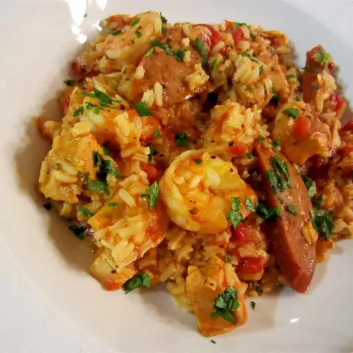

Jambalaya Recipes

How to Make Jambalaya
My family loves a lot of flavor and spice in our food and jambalaya delivers.
This is my version of a New Orleans jambalaya that's got a nice kick to it but not overly hot for those whose tongues can't handle it.
- Prep time: 30 mins
- Cook time: 30 mins
- Total Time: 1 hour
- serving: 4
- Yield: 4 serving
Ingredients
Things you will need:
- 2 tablespoons margarine or butter
- ¼ cup chopped onion
- ⅓ cup chopped celery
- ¼ cup chopped green pepper
- 1 (14.5 ounce) can diced tomatoes
- 1 ½ cups chicken broth
- ⅔ cup long grain white rice
- 1 teaspoon dried basil
- ¼ teaspoon garlic powder
- ¼ teaspoon black pepper
- ¼ teaspoon hot sauce
- 1 bay leaf
- ⅔ cup diced cooked chicken breast
- ⅔ cup cooked crumbled Italian sausage
- ⅔ cup peeled cooked shrimp
Instructions
- Step 1 Melt margarine in a large saucepan over medium heat. Stir in onion, celery, and green pepper; cook until softened, about 5 minutes.
Pour in diced tomatoes, chicken broth, and rice; season with basil, garlic, pepper, hot sauce, and bay leaf. Bring to a boil over medium-high heat,
then turn heat to medium-low, cover, and simmer until the rice is done, about 20 minutes.
- Step 2 Once the rice has cooked, stir in chicken, sausage, and shrimp. Simmer for a few minutes until heated through. Remove bay leaf before serving.